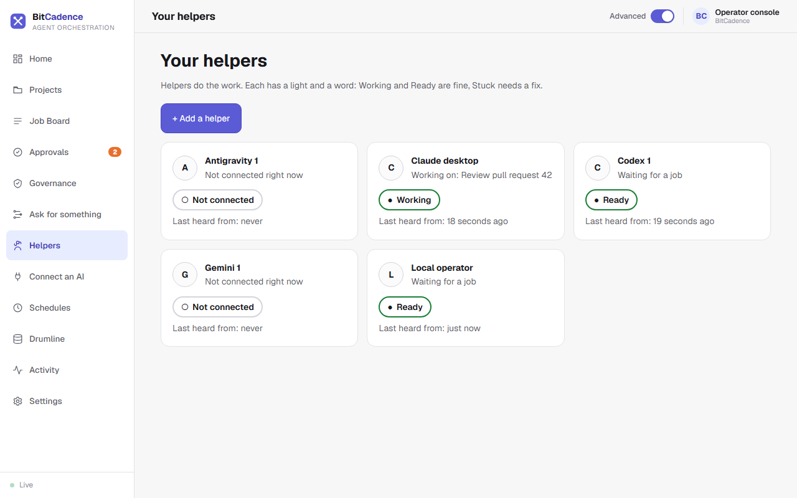
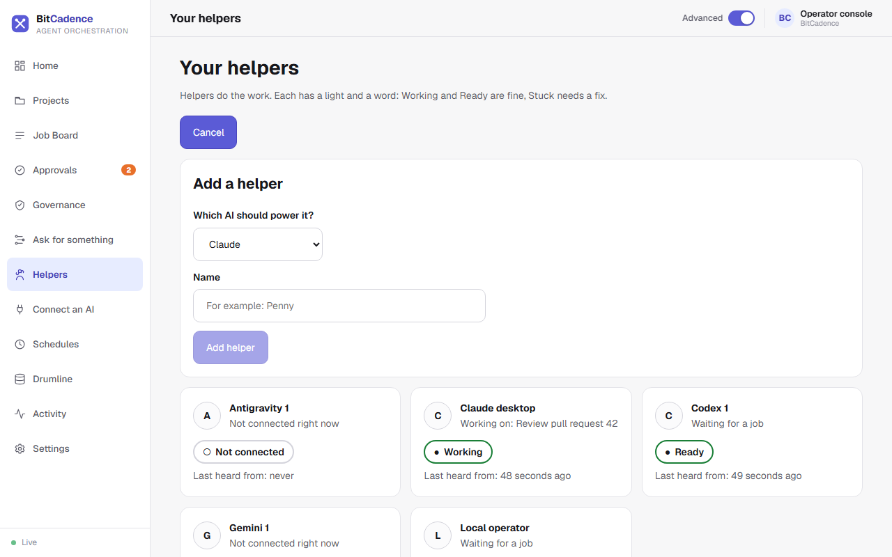

Helpers & Presence
Goal
Add a helper, see at a glance which helpers are working, ready or stuck, and rotate a helper's access token. A helper is one AI worker that takes jobs from the board. (The command line still calls them agents, for example mco agents.)
Step-by-Step Instructions
1. See your helpers
In the left menu, click Helpers.

Each helper has a card with a friendly name, a light and a word:
- Working (green): it holds a job right now, and the card says which one.
- Ready (green): it is waiting for a job.
- Stuck: it needs a fix. Click Fix it on the card. BitCadence shows what it will do and asks before it does anything.
- Not connected (grey): it has not been heard from.
Each card also says when the helper was last heard from. See Helpers for how the lights are decided.
2. Add a helper
- Click + Add a helper.

- Pick which AI should power it and give it a name, for example Penny.
- Click Add helper. BitCadence registers it and saves its sign-in on this computer. The page says "Penny is added" and never shows the sign-in. An existing helper's name is refused instead of silently replacing its sign-in.
To link Claude, Codex, Gemini, Antigravity or Cursor in one tap instead, use Connect an AI.
3. Rotate a helper's access token
If a credential is lost or exposed, run mco reset-token <name> (see below). A new token is minted and the old one stops working at once.
4. Remove a stale helper
Run mco deregister <name> to remove its registration.
The CLI Equivalent
# List all registered helpers and presence
mco agents
# Register a new helper
mco register --name worker-east-1 --role codex
# Register a helper with restricted scopes
mco register --name monitor-1 --role viewer --scope jobs:read
# Rotate a helper's access token
mco reset-token worker-east-1
# Deregister a helper
mco deregister worker-east-1
What You'll See
- Presence Heartbeats: When a helper runs
mco listenor queriesmco_inbox, itslast_seen_attimestamp updates automatically. - Safe Concurrency: Two helpers with the same role share the role's inbox. When work arrives, whichever helper requests a lease first wins atomically. The other helper receives an empty response and continues waiting.
If It Goes Wrong
1. "Helper shows Not connected despite running"
- Cause: Network connectivity lost, or worker polling loop was stopped.
- Fix: A helper is considered offline if no heartbeat occurs within 90 seconds. Restart the worker process or verify network reachability to the gateway.
2. "Token lost after registration"
- Cause: The panel was closed before copying the token.
- Fix: Run
mco reset-token <name>to generate a new token.
3. "Cannot delete helper: jobs currently leased"
- Cause: The helper is actively holding an open lease on an unfinished job.
- Fix: Wait for the job to complete, or use
mco cancel <job-id>to cancel the leased job before deleting the helper.